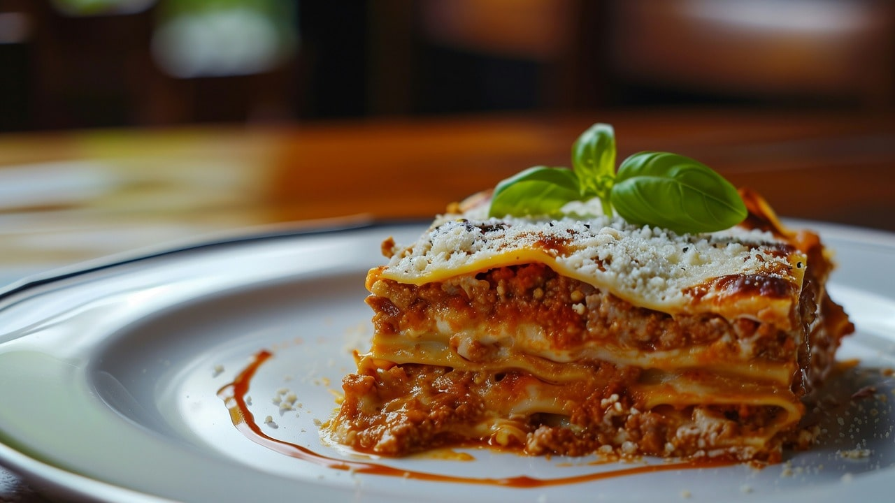

Photo by Emanuel Ekström on Unsplash
Description
An easy lasagna to make at home quickly and with relatively few ingredients
Ingredients
- Ground beef
- Spaghetti sauce
- Cheese
- Eggs
- Salt
- Pepper
- Lasagna noodles
- Water
Directions
- Preheat oven to 350 degrees F.
- Heat skillet over medium-high heat. Add ground beef and cook until brown and crumbly, 8 to 10 minutes.
- Stir in most of the spaghetti sauce and simmer for 5 minutes.
- Combine cheese, eggs, salt, and pepper in a large bowl
- Spread the remaining spaghetti sauce in a baking dish. Cover with uncooked lasagna noodles and cheese mixture; repeat layers twice more.
- Pour water along the edges of the dish, cover with aluminum foil.
- Bake in oven for 45 minutes, uncover and bake an additional 10 minutes. Let stand for 10 minutes before serving.